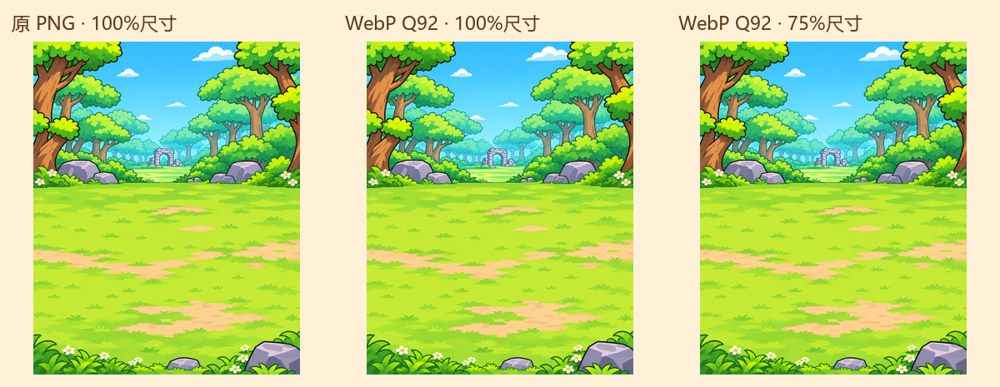
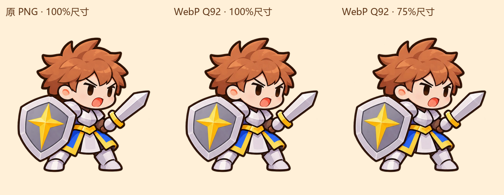
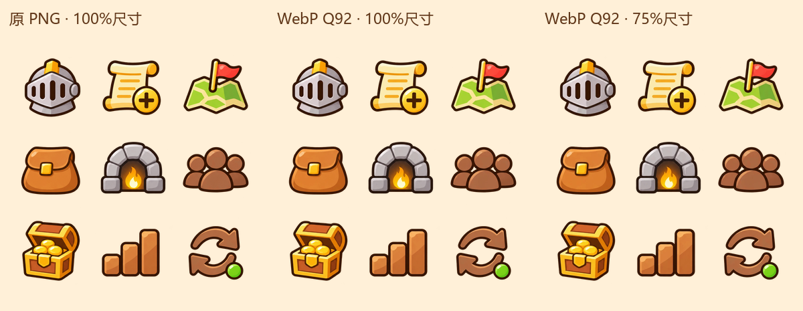

2026-11-22 · 49 张实际运行包 PNG · Pillow WebP method=6。浏览器运行包已采用原尺寸 WebP Q92，含艺术字、图标与按钮。项目源 PNG 保留，加载页4张轻量图已为 Q92。MiB=1,048,576字节，KiB=1,024字节。
| 方案 | 宽、高保留 | 像素总量保留 | 存储 | 体积保留 | 体积减少 |
|---|---|---|---|---|---|
| 原 PNG | 100% × 100% | 100% | 44.04 MiB | 100.0% | 0.0% |
| 全量无损 WebP | 100% × 100% | 100% | 32.17 MiB | 73.0% | 27.0% |
| 分类型建议方案 | 100% × 100% | 100% | 18.46 MiB | 41.9% | 58.1% |
| 全量 WebP Q92（已采用） | 100% × 100% | 100% | 6.87 MiB | 15.6% | 84.4% |
| 全量缩至75% + Q92（激进比较） | 75% × 75% | 56.25% | 4.79 MiB | 10.9% | 89.1% |
同尺寸无损 WebP 保留100%像素尺寸，可见画面无损，体积减少约27%。此前对比的分类型方案将9张背景和10张人物/怪物使用原尺寸 Q92，其他30张UI、艺术字、图标及带文字图集保持无损，合计 18.46 MiB（减少 58.1%）。Q92是编码质量参数，不代表保留92%的画质。
不建议整包宽高统一缩至75%。这会令总像素量变成56.25%；小字、细边框和小图标最先损失清晰度，部分图集裁切坐标也需同步修改。若以后降低背景分辨率，应按最大屏幕显示面积×设备像素比逐张确定；人物透明边缘、标题与九切片保持原尺寸。
仅转换文件格式不会降低同尺寸解码后的像素内存。49张按RGBA8粗算约 186.46 MiB，尚未计GPU副本、纹理mipmap和派生图标。真正降低像素内存需要减分辨率、移除不再引用的旧图，或后续按页面释放；与本次全部美术就绪再进入的要求分开评估。



| 素材 | 原像素尺寸 | PNG | 同尺寸无损 | 同尺寸Q92 | 75%尺寸Q92 |
|---|---|---|---|---|---|
| actors.png | 1774×887 | 617.8 | 381.1原文件的 61.7% | 110.2原文件的 17.8% | 79.3原文件的 12.8% |
| adventure-ui-v5.png | 887×1774 | 2073.2 | 1641.5原文件的 79.2% | 297.3原文件的 14.3% | 209.3原文件的 10.1% |
| bag-ui-v4.png | 953×1651 | 1777.3 | 1315.1原文件的 74.0% | 210.0原文件的 11.8% | 144.7原文件的 8.1% |
| dungeon-ui-v2.png | 953×1651 | 2014.2 | 1615.5原文件的 80.2% | 295.2原文件的 14.7% | 201.3原文件的 10.0% |
| forest.png | 1086×1448 | 1919.3 | 1597.1原文件的 83.2% | 243.3原文件的 12.7% | 170.1原文件的 8.9% |
| hero-archer.png | 1254×1254 | 1058.5 | 651.8原文件的 61.6% | 124.4原文件的 11.8% | 89.7原文件的 8.5% |
| hero-knight.png | 1254×1254 | 799.0 | 477.9原文件的 59.8% | 110.4原文件的 13.8% | 79.9原文件的 10.0% |
| hero-mage.png | 1254×1254 | 771.3 | 503.6原文件的 65.3% | 123.8原文件的 16.0% | 86.7原文件的 11.2% |
| hero-priest.png | 1254×1254 | 746.0 | 460.7原文件的 61.8% | 115.0原文件的 15.4% | 82.1原文件的 11.0% |
| hero-ui-v6.png | 887×1774 | 1933.3 | 1451.6原文件的 75.1% | 265.3原文件的 13.7% | 184.0原文件的 9.5% |
| modal-controls-9.png | 1254×1254 | 823.8 | 501.0原文件的 60.8% | 221.7原文件的 26.9% | 149.6原文件的 18.2% |
| modal-skin-v1.png | 952×1652 | 1585.1 | 841.2原文件的 53.1% | 86.7原文件的 5.5% | 58.6原文件的 3.7% |
| monsters-4.png | 1254×1254 | 760.6 | 471.4原文件的 62.0% | 135.9原文件的 17.9% | 95.5原文件的 12.6% |
| recruit-ui-v1.png | 1774×887 | 1741.3 | 1263.8原文件的 72.6% | 226.1原文件的 13.0% | 154.9原文件的 8.9% |
| training-yard.png | 1254×1254 | 1743.8 | 1361.5原文件的 78.1% | 157.2原文件的 9.0% | 111.6原文件的 6.4% |
| v2-attribute-icons.png | 896×256 | 42.2 | 22.5原文件的 53.3% | 22.8原文件的 54.0% | 23.2原文件的 55.0% |
| v2-backgrounds.png | 1024×1536 | 2229.0 | 1817.1原文件的 81.5% | 389.7原文件的 17.5% | 262.9原文件的 11.8% |
| v2-battle-forest.png | 1122×1402 | 1790.6 | 1389.6原文件的 77.6% | 242.6原文件的 13.6% | 163.9原文件的 9.2% |
| v2-celebration.png | 574×300 | 151.9 | 118.7原文件的 78.1% | 55.3原文件的 36.4% | 37.2原文件的 24.5% |
| v2-close-v3.png | 363×369 | 158.0 | 109.2原文件的 69.1% | 29.6原文件的 18.7% | 20.2原文件的 12.8% |
| v2-controls.png | 1265×1243 | 935.7 | 532.9原文件的 57.0% | 126.7原文件的 13.5% | 83.3原文件的 8.9% |
| v2-feature-scenes.png | 900×1080 | 1644.8 | 1348.3原文件的 82.0% | 302.5原文件的 18.4% | 211.9原文件的 12.9% |
| v2-forge-scene.png | 1411×1115 | 1848.8 | 1391.5原文件的 75.3% | 209.9原文件的 11.4% | 148.0原文件的 8.0% |
| v2-formation-yard-v4.png | 1536×1024 | 1656.4 | 1166.4原文件的 70.4% | 143.1原文件的 8.6% | 101.0原文件的 6.1% |
| v2-hero-archer.png | 640×640 | 332.1 | 239.3原文件的 72.1% | 76.8原文件的 23.1% | 53.2原文件的 16.0% |
| v2-hero-knight.png | 640×640 | 332.4 | 231.5原文件的 69.6% | 70.1原文件的 21.1% | 48.2原文件的 14.5% |
| v2-hero-mage.png | 640×640 | 353.2 | 266.5原文件的 75.5% | 78.7原文件的 22.3% | 53.6原文件的 15.2% |
| v2-hero-marks.png | 1728×192 | 228.6 | 129.3原文件的 56.6% | 69.0原文件的 30.2% | 63.3原文件的 27.7% |
| v2-hero-priest.png | 640×640 | 287.0 | 206.1原文件的 71.8% | 61.1原文件的 21.3% | 42.6原文件的 14.8% |
| v2-icons.png | 1263×1246 | 999.3 | 698.4原文件的 69.9% | 241.9原文件的 24.2% | 167.0原文件的 16.7% |
| v2-navigation-polished.png | 1254×1254 | 818.9 | 552.5原文件的 67.5% | 174.5原文件的 21.3% | 120.4原文件的 14.7% |
| v2-navigation.png | 1254×1254 | 1393.5 | 979.5原文件的 70.3% | 289.3原文件的 20.8% | 201.1原文件的 14.4% |
| v2-popup-buttons.png | 288×224 | 72.5 | 48.2原文件的 66.5% | 11.5原文件的 15.8% | 9.6原文件的 13.3% |
| v2-popup-frame.png | 640×889 | 510.4 | 323.1原文件的 63.3% | 14.5原文件的 2.8% | 9.5原文件的 1.9% |
| v2-popup-marks.png | 896×128 | 108.5 | 69.0原文件的 63.6% | 35.2原文件的 32.4% | 31.6原文件的 29.1% |
| v2-recruit-title.png | 573×257 | 155.9 | 115.3原文件的 74.0% | 40.0原文件的 25.6% | 26.5原文件的 17.0% |
| v2-resource-symbols.png | 1254×1254 | 962.7 | 673.0原文件的 69.9% | 223.6原文件的 23.2% | 156.3原文件的 16.2% |
| v2-result-title-v6.png | 1702×605 | 714.0 | 576.7原文件的 80.8% | 261.1原文件的 36.6% | 174.8原文件的 24.5% |
| v2-skills.png | 1254×1254 | 1842.0 | 1295.8原文件的 70.3% | 315.6原文件的 17.1% | 220.9原文件的 12.0% |
| v2-sprout-left-v3.png | 438×319 | 89.6 | 63.5原文件的 70.8% | 22.4原文件的 25.0% | 15.3原文件的 17.0% |
| v2-sprout-right-v3.png | 420×314 | 79.5 | 57.1原文件的 71.8% | 21.3原文件的 26.8% | 14.3原文件的 18.0% |
| v2-status-heart.png | 256×256 | 55.5 | 39.9原文件的 71.9% | 14.1原文件的 25.4% | 10.0原文件的 18.1% |
| v2-status-shield.png | 256×256 | 59.6 | 43.8原文件的 73.6% | 14.7原文件的 24.7% | 10.2原文件的 17.2% |
| v2-summon-scene.png | 948×1659 | 2184.4 | 1809.0原文件的 82.8% | 338.4原文件的 15.5% | 228.8原文件的 10.5% |
| v2-talent-marks.png | 1344×192 | 365.6 | 250.4原文件的 68.5% | 76.3原文件的 20.9% | 62.2原文件的 17.0% |
| v2-title-plaque-v3.png | 704×154 | 114.9 | 82.0原文件的 71.3% | 23.7原文件的 20.6% | 15.9原文件的 13.8% |
| v2-title-plaque.png | 562×174 | 113.2 | 79.6原文件的 70.3% | 21.7原文件的 19.2% | 14.7原文件的 13.0% |
| v2-up-badge.png | 503×281 | 152.7 | 116.4原文件的 76.2% | 37.1原文件的 24.3% | 24.8原文件的 16.3% |
| v2-up-scene-v3.png | 941×1672 | 1954.0 | 1569.7原文件的 80.3% | 262.1原文件的 13.4% | 179.1原文件的 9.2% |
预载缓存按内容哈希检查：未变化图片重复进入无需下载；新版仅下载改变的文件；浏览器清理缓存后按首次加载处理。缓存只覆盖美术，不承诺整站断网启动。